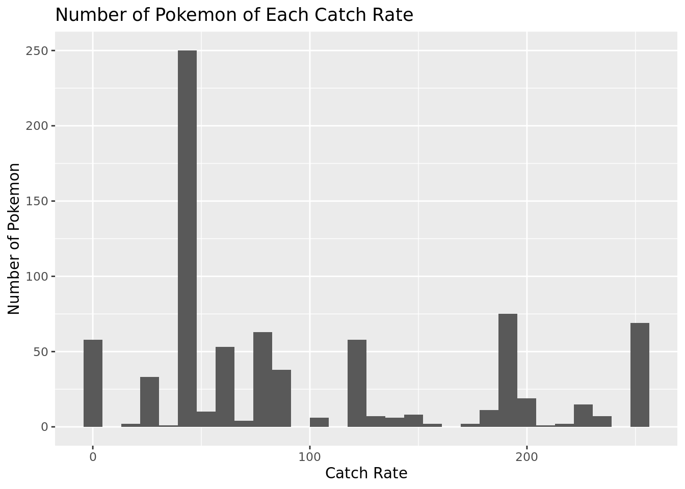

Pokemon
Report
Introduction and data
Copied from HW 8:
The data set we are using is about Pokemon. It has 801 observations and 41 variables. Here is a list of all the variables:
name, japanese name, pokedex number, percentage male, type 1, type 2, classification (as described by the Sun and Moon Pokedex), height, weight, capture rate, base egg steps, abilities, experience growth, base happiness, 18 variables of the amount of damage taken against an attack of a particular type, base hp, base attack, base defense, base special attack, base special defense, base speed, generation, legendary
After brainstorming, we came up with two potential research topics: predicting capture rate based on predictors and predicting pokemon type based on stats and other predictors. Our potential research questions could be: “Can we accurately predict a Pokemon’s capture rate based on its base stats, height and weight, type, experience growth, and percentage male?” and “Is it possible to predict a Pokemon’s typing based on its base stats and/or other predictors?”.
Introduction
We are using a dataset about Pokemon. There are 801 observations and 41 variables…
When attempting to catch a Pokemon, there are many variables that go into if the Pokemon will be caught or not. These variables include type of Pokeball used, level of the wild Pokemon, etc. All of these factors, in addition to RNG (random number generation) are factored into a specific formula to determine if a Pokemon is caught on any given attempt. Every Pokemon has its own “catch rate,” which is weighted heavily in the formula. Pokemon with a higher catch rate are easier to catch. For example, Pidgey (a weak, unevolved Pokemon) has a catch rate of 255, which is tied for the highest, implying that Pidgey is very easy to catch. However, Mewtwo (a strong, legendary Pokemon) has a catch rate of 3, which is tied for the lowest, implying that Mewtwo is very difficult to catch. Note: “catch rate” is the same as “capture rate.”
Research Question: What characteristics of a Pokemon influence catch rate, and can we develop a model that uses these characteristics to predict the catch rate of a Pokemon.
Methodology
Type of Model
We decided a Linear Regression Model is the best model to predict the catch rate of a Pokemon.
The catch rate of Pokemon (in this dataset) is an integer from 3-255. However, there are only 33 unique catch rates among the 801 Pokemon. For example, 50 Pokemon have a catch rate of 60, and a whopping 250 Pokemon have a catch rate of 45. Based off of this information, it may make sense to use a multinational regression model, or, because the data is ordered, an ordinal regression model. This would lead to a model that predicts the catch rate of a Pokemon relative to the 33 unique catch rates. However, this is a lot of outcomes for the response variable. We could simplify this ordinal regression model with some number of different “bins.” For example, bin 0 could be all Pokemon with a catch rate of 0-50, bin 1 is all Pokemon with a catch rate of 50-100, etc.
We decided against using the ordinal regression model for multiple reasons. First, 33 different outcomes for the response variable is a lot. It creates an unnecessarily complicated model. This problem can be fixed by grouping the catch rates into different “bins.” However, this is not optimal, because we don’t have a strategy for how to create the “bins.” How many “bins” should we have? Should they all be of equal length? Without the proper tools, this method does not make sense for our purposes. However, overall, we decided against the ordinal regression model because even though many Pokemon share a catch rate with many others, there are still Pokemon that have a unique catch rate, meaning the current catch rates of Pokemon are not the only possible catch rates. There could still be a new Pokemon introduced that has a fully unique catch rate. If we were tasked with predicting the catch rate of a new Pokemon with certain attributes, our model would no longer make sense if that Pokemon’s catch rate was fully unique. We would be looking at the probability that this Pokemon has a certain catch rate, but the Pokemon wouldn’t have any of the listed catch rates.
A linear regression model is best because…
Therefore, we decided that a linear regression model would best suit our research question
capture_rate n
1 3 58
2 15 2
3 25 13
4 30 20
5 35 1
6 45 250
7 50 7
8 55 3
9 60 50
10 65 3
11 70 4
12 75 61
13 80 2
14 90 38
15 100 6
16 120 55
17 125 3
18 127 5
19 130 2
20 140 6
21 145 1
22 150 7
23 155 1
24 160 1
25 170 2
26 180 11
27 190 75
28 200 19
29 205 1
30 220 2
31 225 15
32 235 7
33 255 69
34 NA 1`stat_bin()` using `bins = 30`. Pick better value with `binwidth`.Warning: Removed 1 rows containing non-finite values (`stat_bin()`).
Variable Selection
This Pokemon dataset comes with many variables, so we must narrow down to only the important variables.
For classification and readability purposes, we chose to keep the variables name, pokedex_number, and generation. The response variable is capture_rate. Other important variables that may play a role in capture rate are type1, type2, height_m, weight_kg, base_egg_steps, experience_growth, base_happiness, hp, attack, defense, sp_attack, sp_defense, speed, and is_legendary.
The japanese_name is just another version of name. The against_? variables are dependent on only typing (type1 and type2), and it will be more useful to just look at the typing of a Pokemon rather than how effective certain moves are against it. There are hundreds of different abilities a Pokemon can have, and very little overlap of abilities between Pokemon, thus we do not need the abilities variable. The classification of a Pokemon is almost unique for every Pokemon (there is very little overlap), and it mainly just groups Pokemon by their evolution line, yielding classification unwanted. The percentage_male variable is excluded due to missing data, which is discussed later.
We now run variable selection models to determine which of the following variables are best/important for predicting catch rate: type1, type2, height_m, weight_kg, base_egg_steps, experience_growth, base_happiness, hp, attack, defense, sp_attack, sp_defense, speed, and is_legendary.
Attaching package: 'Metrics'The following objects are masked from 'package:yardstick':
accuracy, mae, mape, mase, precision, recall, rmse, smape
Attaching package: 'MASS'The following object is masked from 'package:dplyr':
selectLoading required package: Matrix
Attaching package: 'Matrix'The following objects are masked from 'package:tidyr':
expand, pack, unpackLoaded glmnet 4.1-6Loading required package: lattice
Attaching package: 'caret'The following objects are masked from 'package:Metrics':
precision, recallThe following objects are masked from 'package:yardstick':
precision, recall, sensitivity, specificityThe following object is masked from 'package:purrr':
liftDO VARIABLE SELECTION HERE
Interaction Terms?
Start with visualizing the data Hypothesis testing Interaction terms Transformations of variables? Variable selection Linear / logistic / ordinal / mulitinomial regression Missing data Mixed models
Missing Data
Many species of Pokemon do not have a gender, leading to many NAs. However, there is a disproportionate amount of legendaries that do not have a gender. This is because in a Pokemon game, legendaries are unique and special; there is only one of each legendary Pokemon in the “world.” Thus 63/70 of legendary Pokemon have an NA for percentage_male. This data is MAR (missing at random). Because they are legendary, many of them have extremely low catch rates; to be precise, 53/70 legendary Pokemon have a catch rate of 3, the lowest possible catch rate. This means thaat our model will most likely not be able to accurately predict legendary Pokemon’s catch rate, and there will be worse representation among Pokemon with lower catch rates. The best and easiest solution to this problem is to eliminate the percentage_male predictor from the model.
While reading the .csv file, the dataset automatically translated the capture_rate variable to characters. Upon inspection, Pokemon number 774, Minior, had this listed as its catch rate: “30 (Meteorite)255 (Core)”. During battle, Minior has two forms: meteor form and core form. Minior has the “shields down” ability, which means when Minior is at half health or less, Minior changes from the Meteor form to the core form. However, Minior’s catch rate also changes when it changes forms, from 30 (meteor form) to 255 (core form). Due to Minior’s ability having a direct relation to the catch rate, we chose to exclude Minior as an observation. We updates Minior’s catch rate to be NA, thus excluding this observation from the model.
Many Pokemon only have one type, and thus do not have a second type. This is not missing data, this is just the classification of the Pokemon.
Results
Call:
lm(formula = capture_rate ~ height_m + weight_kg + base_egg_steps +
experience_growth + base_happiness + hp + attack + defense +
sp_attack + sp_defense + speed + is_legendary, data = pokemon)
Residuals:
Min 1Q Median 3Q Max
-161.066 -29.445 -4.779 34.315 217.509
Coefficients:
Estimate Std. Error t value Pr(>|t|)
(Intercept) 3.088e+02 1.879e+01 16.439 < 2e-16 ***
height_m 1.088e-02 2.505e+00 0.004 0.9965
weight_kg -4.075e-03 2.538e-02 -0.161 0.8725
base_egg_steps -1.099e-03 6.640e-04 -1.655 0.0983 .
experience_growth 1.514e-06 1.318e-05 0.115 0.9086
base_happiness -1.496e-01 1.241e-01 -1.205 0.2284
hp -5.702e-01 9.337e-02 -6.107 1.62e-09 ***
attack -3.522e-01 8.130e-02 -4.331 1.68e-05 ***
defense -4.762e-01 8.805e-02 -5.409 8.49e-08 ***
sp_attack -4.036e-01 7.939e-02 -5.083 4.67e-07 ***
sp_defense -4.730e-01 9.590e-02 -4.932 9.99e-07 ***
speed -4.913e-01 8.204e-02 -5.988 3.26e-09 ***
is_legendary 2.317e+01 1.427e+01 1.624 0.1048
---
Signif. codes: 0 '***' 0.001 '**' 0.01 '*' 0.05 '.' 0.1 ' ' 1
Residual standard error: 53.76 on 767 degrees of freedom
(21 observations deleted due to missingness)
Multiple R-squared: 0.5058, Adjusted R-squared: 0.4981
F-statistic: 65.43 on 12 and 767 DF, p-value: < 2.2e-16